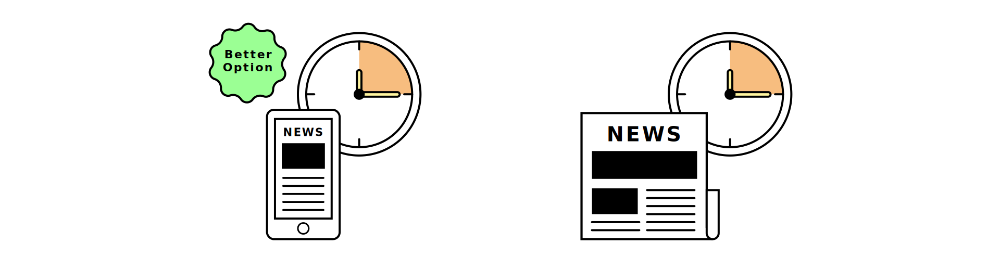

Digitalizing things is often seen as a solution for sustainability. When thinking about sustainable choices, we focus most on material things. Digital things are often left out of the discussion. Not because we don’t care about it, but simply because we don’t think about it as waste.
What About Web? is a project with the intention of bringing more attention to the carbon footprint of the internet and how we can bring sustainable thinking into the digital world too.
There is a lot that needs to be considered when calculating the carbon footprint of the internet. The carbon emission of a webpage is based on the amount of data that is transferred, how much time is spent on the webpage, and what kind of energy sources are used.
Scrolling through Instagram, sending messages, sharing pictures and streaming videos..
Everything we do online have an impact on the planet.
Greenspector, a french company specialized in energy efficient digital services, did a measurement of which social media apps have the biggest carbon emissions. The measurement was done by scrolling on the front page/news feed.
Source: Greenspector, Ranking of Social Media apps according to their carbon emissions, France, 2020.
Social media apps have a lot of different features and each feature can have a different impact. Greenspector measured which Instagram features have the biggest carbon emission.
Source: Greenspector, Ranking of Instagram features according to their carbon emissions, France, 2020.
In a study made by Swedish KTH Center for Sustainable Communications, they found out that if you read news for about 10 minutes a day, digital newspaper was a more environmentally friendly option.
However, if you read news for more than 30 minutes a day, a print newspaper was the best option.

What kind of energy sources are used have a huge impact. It takes an enormous amount of energy to power devices and data centers. If we are able to transition to renewable energy sources, we can better control the damage and be sustainable.
In 2006 Greenpeace challenged the largest global architects and operators of the internet to commit to renewable energy. Now we are seeing a major increase in prioritizing renewable energy sources and thankfully some of the largest internet companies like Facebook and Google are committed to making internet greener.
We need to be more cautious of how we use the internet. Every visit on a website has a carbon footprint. Every second spent on a digital device counts. Because of the exponential growth of the digital world, the internet has a huge impact on our climate. We need to start acknowledging the impact internet has on our planet and start making sustainable choices in the digital world.
Project made by Johanna Tenström in Information Design Studio Course 2021 at Aalto University.